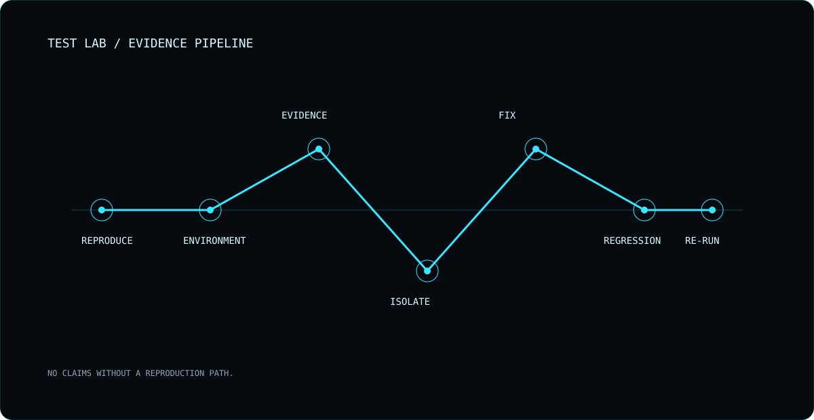

BREAK IT.
PROVE IT.
Testing is an evidence loop: reproduce the issue, record the environment, isolate the cause and verify the fix.

LAB / REPRODUCE · EVIDENCE · REGRESSIONVOIDONE / OPEN SURFACE
LAB / SURFACE
Manual exploration and automation complement each other when the claim can be reproduced.
No test count is presented unless the project can actually substantiate it.